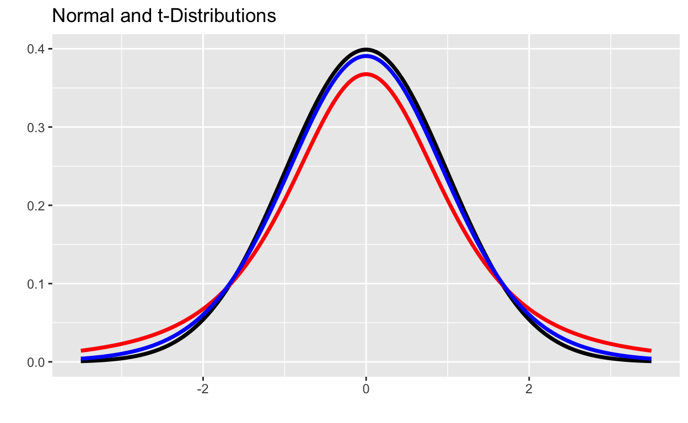

In this workbook, we continue our exploration of statistical inference. Through the past few workbooks you became more comfortable with hypothesis testing and confidence intervals associated with categorical variables; here we extend to numerical variables. First you’ll be reminded of the normal distribution and be formally introduced to the family of \(t\)-distributions. After that, we’ll work on an application to sentencing data from the Southern District of the State of New York.
While you were watching my walkthrough video you probably noticed that the side of the standard error decision tree corresponding to numerical data (inference for the mean, \(\mu\)) is much more involved than the side corresponding to inference for proportions. I mentioned in that video a bit about why that side of the tree is more involved and much of it stems from the idea that using a sample standard deviation as an approximation for the population standard deviation adds uncertainty to our approach. In order to counter this added uncertainty, we utilize a class of penalized normal distributions, called the \(t\)-distributions. Watch at least one of the videos below for a bit of history on the \(t\)-distributions.
A Detailed Introduction
A Shorter Introduction
So we’ve identified some scenarios for which we should utilize a \(t\)-distribution instead or the normal (\(z\)) distribution – the simple rule of thumb that I’ve given you is that any time we use a sample standard deviation as a proxy for the population standard deviation in the standard error estimate, we should utilize the \(t\)-distribution.
There are several other rules of thumb which people follow – such as, even if you utilize the sample standard deviation in place of the population standard deviation but your sample size is large enough, then we can safely use the normal distribution. Since access to powerful statistical software makes distribution lookup tables unnecessary, my feeling is that these rules of thumb are no longer required. That is, we should use the \(t\)-distibution any time we use the sample standard deviation in place of the population distribution.
Okay, so what does the \(t\)-distribution actually look like? As we’ve mentioned before and was cited in the video introductions, the \(t\)-distribution is a family of distributions identified by a parameter called degrees of freedom. Below you can see a standard normal distribution in black, a \(t\)-distribution with 3 degrees of freedom in red, and a \(t\)-distribution with 12 degrees of freedom in blue.

Notice that all three of the distributions are bell-shaped, but that the \(t\)-distributions have fatter tails than the normal distribution does. Also, notice that the \(t\)-distribution with 12 degrees of freedom is more similar to the normal distribution than the \(t\)-distribution with 3 degrees of freedom.
When we introduced the normal distribution, we identified two helper functions:
The function pnorm(q, mean, sd) can be used to find the probability that a randomly selected observation is less than the boundary value \(q\) from a population which is normally distributed with mean mean and standard deviation sd.
pnorm() function can be used to find area to the left of some boundary value under a normal distribution.The function qnorm(p, mean, sd) can be used to find the boundary value such that the probability of a randomly selected observation falling below that observation is p.
qnorm() function can be use to find the cutoff value for which the area to the left underneath a normal distribution is p.We have analogous functions for the \(t\)-distribution.
pt(q, df) can be used to find the probability of falling to the left of the boundary value q in a \(t\)-distribution with df degrees of freedom.qt(p, df) can be used to find the cutoff value for which the area to the left of that cutoff in a \(t\)-distribution with df degrees of freedom is p.Notice that our functions for the \(t\)-distribution do not have parameters for the mean or standard deviation. This means that we must always work with standardized variables (see the formula for the test statistic on the standard error decision tree) when working with the \(t\)-distributions.
Let’s start with some practice using the pt() and qt() functions.
Question 1: Use the code block below to find \(\mathbb{P}\left[t < \right.\) 1.52 \(\left.\right]\) in a \(t\)-distribution with 22 degrees of freedom.
grade_result(
pass_if(~ (abs(.result - pt(boundary1, df1)) < 0.001))
)Question 2: Find \(\mathbb{P}\left[t > \right.\) -1.66 \(\left.\right]\) in a \(t\)-distribution with 15 degrees of freedom.
grade_result(
pass_if(~ (abs(.result - (1 - pt(boundary2, df2))) < 0.001))
)Question 3: Find the cutoff value in a \(t\) distribution with 5 degrees of freedom for which the area to the left of the cutoff value is 0.41.
grade_result(
pass_if(~ (abs(.result - qt(area3, df3)) < 0.01))
)Question 4: Find the critical value associated with a 95% confidence interval using a \(t\)-distribution with 14 degrees of freedom.
grade_result(
pass_if(~ (abs(.result - qt((1 - 0.01*(100 - clevel4)/2), df4)) < 0.01))
)Okay, good – now that you’ve had some practice working with the \(t\)-distribution, let’s move on to some applications.
We’ll work with a dataset on Federal Sentencing from the Southern District of New York State. A subset of the data, consisting only of drug-related changes, has been loaded for you as SDNYdrug.
Question 1: Compute a 95% confidence interval for the average sentence length for a drug-related charge in the Southern District of New York State.
SentenceMonths).
grade_result(
pass_if(~ (abs(.result - mean(SDNYdrug$SentenceMonths)) < 0.01))
)Remember that you can use the $ operator to access a column of a dataframe, and R has a mean() function which can be used to compute the mean of a numerical column.
grade_result(
pass_if(~ (abs(.result - (sd(SDNYdrug$SentenceMonths)/nrow(SDNYdrug))) < 0.0005))
)Remember that R can compute the standard deviation of a set of numeric values with the sd() function. You might also find the nrow() function useful, since it can return the number of rows in a dataframe.
grade_result(
pass_if(~ (abs(.result - qt(0.975, df = nrow(SDNYdrug) - 1)) < 0.005))
)Did you remember to use the qt() function to determine the critical value? With so many observations, the correct critical value differed very little from the 1.96 value used with the normal distribution. Remember that the critical values provided on the standard error decision tree are for use with the normal distribution only. Any time we use a sample standard deviation as a “stand-in” for the population standard deviation while computing standard error, we should be using critical values from a \(t\)-distribution. We can get the critical value using R’s qt() function – this will make a real difference if sample sizes are smaller.
grade_result(
pass_if(~ (abs(.result - (mean(SDNYdrug$SentenceMonths) - ((qt(0.975, nrow(SDNYdrug) - 1))*(sd(SDNYdrug$SentenceMonths)/nrow(SDNYdrug))))) < 0.01))
)grade_result(
pass_if(~ (abs(.result - (mean(SDNYdrug$SentenceMonths) + ((qt(0.975, nrow(SDNYdrug) - 1))*(sd(SDNYdrug$SentenceMonths)/nrow(SDNYdrug))))) < 0.01))
)Question 2: Conduct a hypothesis test at the \(\alpha = 0.10\) level of significance to determine whether the dataset provides significant evidence to suggest that the average sentence length for white offenders and average sentence length for non-white offenders differs for drug-related cases in the Southern District of New York State.
I’ve stored the sentence lengths (in months) handed down to white offenders in an object called whiteSentences and the sentence lengths for non-white offenders in an object called nonWhiteSentences. Use the code blocks below to answer the corresponding questions.
grade_result(
pass_if(~ (.result == length(whiteSentences)))
)whiteSentences is a vector not a dataframe, so running nrow(whiteSentences) will throw an error. Try running length(whiteSentences) instead.
grade_result(
pass_if(~ (.result == length(nonWhiteSentences)))
)grade_result(
pass_if(~ (abs(.result - mean(whiteSentences)) < 0.01))
)grade_result(
pass_if(~ (abs(.result - mean(nonWhiteSentences)) < 0.01))
)grade_result(
pass_if(~ (abs(.result - sd(whiteSentences)) < 0.01))
)grade_result(
pass_if(~ (abs(.result - sd(nonWhiteSentences)) < 0.01))
)Okay, we’ve answered lots of questions that give us pieces of our analysis. Now, let’s think about putting to pieces together to compute the test statistic, \(p\)-value, and complete the hypothesis test.
grade_result(
pass_if(~ (abs(abs(.result) - abs(mean(whiteSentences) - mean(nonWhiteSentences))) < 0.01))
)grade_result(
pass_if(~ (abs(.result - (sqrt((sd(whiteSentences)^2/length(whiteSentences)) + (sd(nonWhiteSentences)^2/length(nonWhiteSentences))))) < 0.01))
)grade_result(
pass_if(~ (abs(.result - ((mean(whiteSentences) - mean(nonWhiteSentences)) - 0)/((sqrt((sd(whiteSentences)^2/length(whiteSentences)) + (sd(nonWhiteSentences)^2/length(nonWhiteSentences)))))) < 0.01))
)grade_result(
pass_if(~ (abs(.result - (2*(1 - pt(abs(((mean(whiteSentences) - mean(nonWhiteSentences)) - 0)/((sqrt((sd(whiteSentences)^2/length(whiteSentences)) + (sd(nonWhiteSentences)^2/length(nonWhiteSentences)))))), df = (length(whiteSentences) + length(nonWhiteSentences) - 2))))) < 0.01))
)Answer the following to complete the hypothesis test.